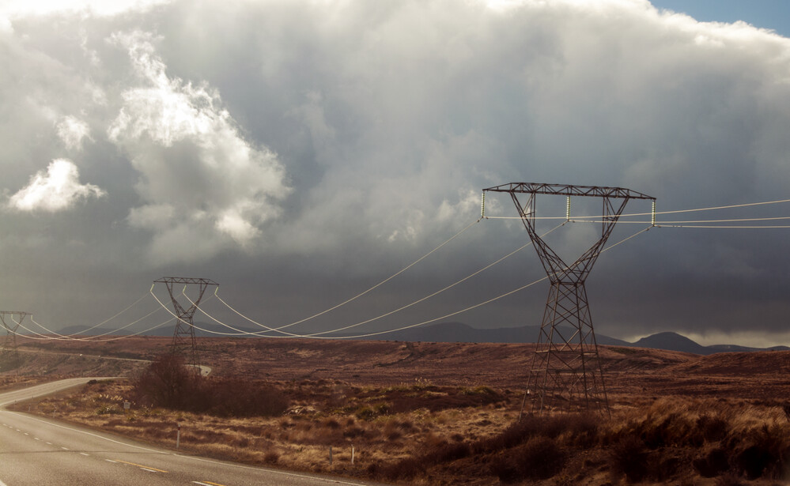
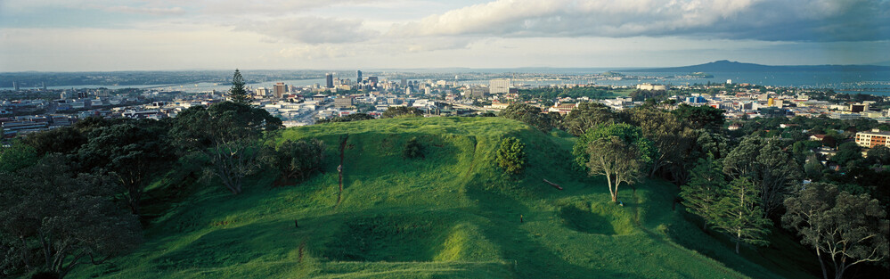
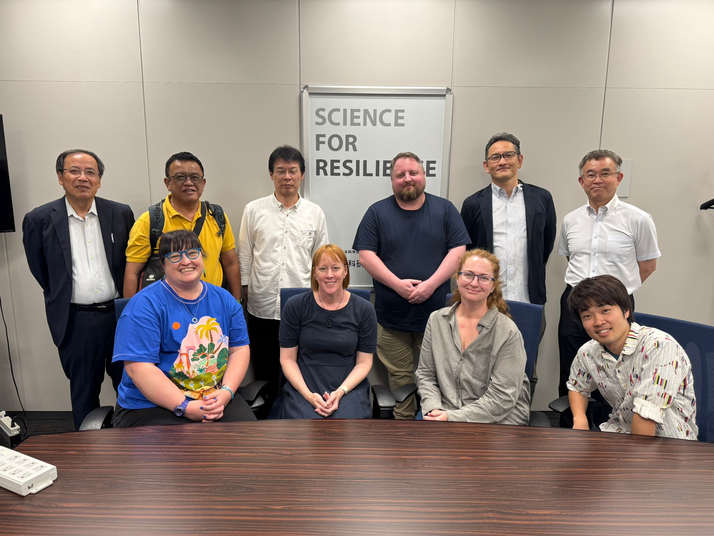
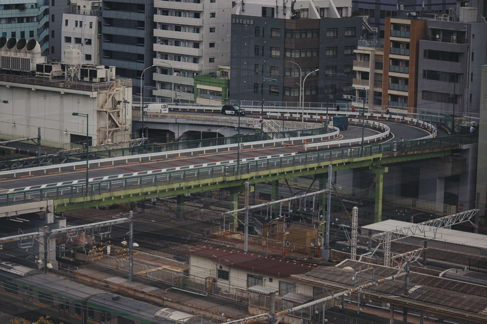
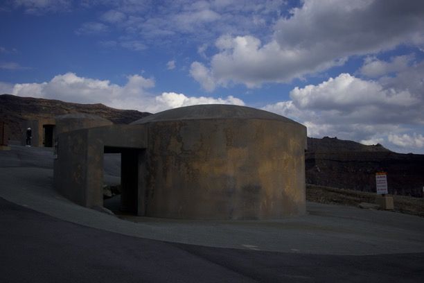

Metropolitan Tokyo Ashfall
Urban recovery under widespread ashfall.
We co-develop impact modelling, shared readiness measures, and a trusted trans‑Pacific network to prepare for low‑frequency, high‑consequence eruptions affecting Japan and Aotearoa New Zealand.




Build a shared understanding of ashfall risk mitigation across Japan and Aotearoa, recognising distinct contexts. We advance preparedness by building strong cross‑national networks and develop case‑study impact scenarios for response and recovery planning in both countries.

An end‑to‑end workflow to estimate response needs and likely bottlenecks within the first operational period.
Step 1
Raster & probabilistic ashfall layers.
Step 2
Exposure, asset fragility, & disruption.
Step 3
Testing of interventions.
Jointly curated scenarios spanning urban centres, critical corridors, and lifelines important to both nations.
Urban recovery under widespread ashfall.
Eruption affecting New Zealand's largest city.
Implications for nationally significant infrastructure, primary industry, and supply chains.
Fieldwork, workshops, and illustrative imagery.




Peer‑reviewed papers, technical reports, posters, and presentations.